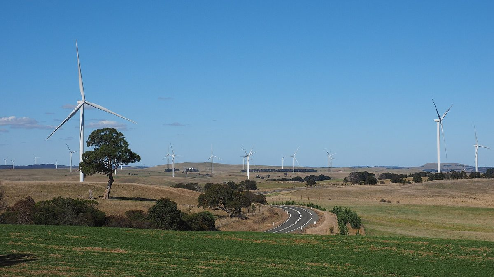

호주, 재생에너지·송전 개발사 등급제 공개 가동…첫 평가 5개사 중 3곳 공동체 참여 5성

에너지기반시설 위원, 7개 기준 독립 평가 결과 온라인 공개…5성 기준은 깊은 이익 공유와 공식 공동 의사결정, 20곳 넘게 평가 중이며 연방 용량투자제도 11차 입찰부터 참여 의무
호주 에너지기반시설 위원(AEIC) 토니 마하르(Tony Mahar)가 10월 29일 재생에너지 개발사와 송전회사를 독립적으로 평가해 결과를 온라인에 공개하는 '개발사 등급제(Developer Rating Scheme, DRS)'를 가동한다고 발표했다. 등급제는 공동체 참여 역량, 지배구조와 사업 행태 등 7개 기준으로 회사를 평가하며, 연방정부가 신용평가사 에퀴팩스 오스트랄라시아 신용등급(Equifax Australasia Credit Ratings)과 함께 만들기로 약속한 지 약 14개월 만에 문을 열었다. 이 제도는 초대 위원 앤드루 다이어(Andrew Dyer)가 이끈 공동체 참여 검토의 핵심 권고였으며, 크리스 보언(Chris Bowen) 연방 에너지장관이 맡긴 이 검토는 부실한 주민 소통이 되풀이되면서 개발사, 특히 대형 송전 사업자에 대한 깊은 불신이 생겼다고 지적했다. 첫 평가는 스스로 신청한 이베르드롤라 호주, 틸트 리뉴어블스, RWE, 스트롬로 에너지, 민트 리뉴어블스 등 5개사가 받았고, 이 가운데 3곳이 공동체 참여 부문 만점인 5성, 2곳이 4.5성을 받았는데, 회사들이 밝힌 바로는 이베르드롤라와 틸트가 5성, 스트롬로가 4.5성과 '신뢰할 만함' 등급이다. 등급제 누리집은 5성을 깊은 이익 공유와 탄탄한 지배구조로 일반 관행을 넘어서고, 공식적인 공동 의사결정 절차를 두어 초기 지역 계획 단계부터 사업 종료까지 이해관계자의 참여가 사업을 실제로 바꾸게 하는 회사로 정의한다. 20곳 넘는 회사가 평가를 받고 있으며, 참여는 아직 자율이지만 연방 용량투자제도(CIS) 11차 입찰부터는 연방 지원을 받으려는 개발사에게 의무가 됐고, 마하르 위원은 등급제가 "새로운 업계 기준"이 되고 전국 인허가 절차의 표준 요건으로 자리 잡기를 바란다고 말했다.
시민에너지 관점
지난해 60개 개발사가 시범 참여에 서명했던 호주의 등급제는 이제 연방 입찰의 참여 조건이 됐고, 최고 등급인 5성의 정의에 깊은 이익 공유와 공식 공동 의사결정을 넣어 주민과 권한을 나누는 회사가 높은 점수를 받게 했다. 별점이 개발사 홍보 수단에 그칠 수 있다는 우려가 나올 수 있지만, 평가 결과를 누구나 보게 공개하고 공공 지원과 연결하면 지역과 어떻게 일해 왔는지가 곧 사업 기회를 가르는 구조가 만들어진다. 다만 이 제도는 주민 소유를 요구하지 않는 평가·공개 장치여서, 발전소의 수익과 결정권이 지역에 남으려면 주민이 설비의 주인이 되는 길이 함께 열려야 한다. 국내에서도 공공부지와 대규모 재생에너지 사업의 사업자를 고를 때 주민 참여와 이익 공유 실적을 공개 평가 기준으로 삼고, 그 위에 주민 출자 몫을 정해 두는 제도부터 만들어야 한다.
출처: Renew Economy 2026-10-29 Sophie Vorrath 원문 보기
豪州、再エネ・送電事業者の格付け制度を公開稼働…初回評価5社のうち3社が地域参画で5つ星
エネルギーインフラ・コミッショナーが7基準の独立評価結果をオンライン公開…5つ星の基準は深い利益共有と正式な共同意思決定、20社超が評価中で連邦容量投資制度の第11回入札から参加義務
オーストラリアのエネルギーインフラ・コミッショナー（AEIC）トニー・マハー（Tony Mahar）氏は10月29日、再生可能エネルギー開発事業者と送電会社を独立して評価し、結果をオンラインで公開する「開発事業者格付け制度（Developer Rating Scheme、DRS）」の稼働を発表した。格付けは地域社会への関与能力、ガバナンスや事業行動など7つの基準で企業を評価するもので、連邦政府が信用格付け会社エクイファクス・オーストララシア・クレジット・レーティングズ（Equifax Australasia Credit Ratings）と共に整備すると約束してから約14カ月で始まった。この制度は初代コミッショナーのアンドリュー・ダイアー（Andrew Dyer）氏が率いた地域参画レビューの中核的な勧告で、クリス・ボーエン（Chris Bowen）連邦エネルギー相が依頼したこのレビューは、住民とのずさんな対話が繰り返された結果、開発事業者、とりわけ大型送電事業者への深い不信が生まれたと指摘していた。初回の評価は自ら申請したイベルドローラ・オーストラリア、ティルト・リニューアブルズ、RWE、ストロムロ・エナジー、ミント・リニューアブルズの5社が受け、このうち3社が地域参画部門で満点の5つ星、2社が4.5つ星を得た。各社によると、イベルドローラとティルトが5つ星、ストロムロが4.5つ星と「信頼できる」の格付けだった。格付け制度のウェブサイトは5つ星を、深い利益共有と強固なガバナンスで一般的な慣行を上回り、正式な共同意思決定の手続きを設けて、初期の地域計画段階から事業終了まで利害関係者の参加が事業を実際に形づくるようにしている企業と定義している。20社を超える企業が評価を受けている最中で、参加は現在任意だが、連邦の容量投資制度（CIS）第11回入札からは連邦支援を求める開発事業者に義務付けられており、マハー氏は格付けが「新たな業界基準」となり、全国の許認可手続きの標準要件として定着することを望むと述べた。
市民エネルギーの視点
昨年60の開発事業者が試行参加に署名していた豪州の格付け制度は、いまや連邦入札の参加条件となり、最高ランクの5つ星の定義に深い利益共有と正式な共同意思決定を盛り込むことで、住民と権限を分かち合う企業が高く評価されるようにした。星の数が開発事業者の宣伝手段にとどまるという懸念も出得るが、評価結果を誰でも見られるよう公開し公的支援と結びつければ、地域とどう向き合ってきたかがそのまま事業機会を左右する仕組みが生まれる。ただしこの制度は住民による所有を求めない評価・公開の仕組みであり、発電所の収益と決定権を地域に残すには、住民が設備の持ち主になる道も併せて開かれなければならない。韓国でも公共用地や大規模再エネ事業の事業者を選ぶ際、住民参加と利益共有の実績を公開の評価基準とし、そのうえで住民の出資分をあらかじめ定める制度づくりから始めるべきだ。
出典: リニューエコノミー（Renew Economy） 2026-10-29 ソフィー・ボラス 原文を読む
澳大利亚可再生能源与输电开发商评级制度公开上线……首批5家中3家社区参与获五星
能源基础设施专员按7项标准独立评估并在线公开结果……五星标准为深度利益共享与正式共同决策，20多家正在评估中，联邦容量投资计划第11轮招标起强制参与
澳大利亚能源基础设施专员（AEIC）托尼·马哈尔（Tony Mahar）10月29日宣布，启动对可再生能源开发商和输电公司进行独立评估并在线公开结果的"开发商评级制度"（Developer Rating Scheme，DRS）。该制度按社区参与能力、公司治理与商业行为等7项标准评估企业，距联邦政府承诺与信用评级机构Equifax Australasia Credit Ratings合作建立该制度约14个月后正式上线。这一制度是首任专员安德鲁·戴尔（Andrew Dyer）主持的社区参与审查的核心建议；该审查受联邦能源部长克里斯·鲍恩（Chris Bowen）委托，指出与居民沟通不善的情况反复出现，导致外界对开发商、尤其是大型输电项目开发商产生了深度不信任。首批评估对象为主动申请的伊维尔德罗拉澳大利亚、Tilt Renewables、RWE、Stromlo Energy和Mint Renewables共5家公司，其中3家在社区参与方面获得满分五星，2家获得4.5星；据各公司介绍，伊维尔德罗拉和Tilt获五星，Stromlo获4.5星及"值得信赖"评级。评级制度网站将五星定义为：通过深度利益共享和稳健治理超越一般做法，并设立正式的共同决策程序，使利益相关方的参与从早期区域规划阶段到项目终止都能切实影响项目的企业。目前有20多家公司正在接受评估；参与虽仍属自愿，但自联邦容量投资计划（CIS）第11轮招标起，申请联邦支持的开发商必须参与。马哈尔表示，希望该制度成为"新的行业基准"，并成为全国审批程序中的标准要求。
市民能源视角
去年有60家开发商签约试点的澳大利亚评级制度，如今已成为联邦招标的参与条件，并把深度利益共享和正式共同决策写进最高等级五星的定义，让与居民分享权力的企业获得高分。有人可能担心星级只会沦为开发商的宣传工具，但只要评估结果向所有人公开并与公共支持挂钩，企业过去如何与地方打交道就会直接决定其商业机会。不过，这一制度只是不要求居民持股的评估与公开机制，要让电站收益和决策权留在地方，还必须同时打开居民成为设施所有者的道路。韩国在为公共用地和大型可再生能源项目选择开发商时，也应把居民参与和利益共享的实绩作为公开评估标准，并在此基础上先行建立预先确定居民出资份额的制度。
来源: Renew Economy 2026-10-29 索菲·沃拉斯（Sophie Vorrath） 查看原文
Australia launches public rating scheme for renewable and transmission developers, with three of the first five earning five stars for community engagement
The energy infrastructure commissioner publishes independent ratings against seven criteria online; five stars mean deep benefit-sharing and formal co-decision, more than 20 firms are being assessed, and participation is required from the 11th Capacity Investment Scheme tender
Australian Energy Infrastructure Commissioner (AEIC) Tony Mahar announced on Oct. 29 the launch of the Developer Rating Scheme (DRS), which independently assesses renewable energy developers and transmission companies and publishes the results online. The scheme rates companies against seven criteria, including community engagement capability and governance and business conduct, and it opened about 14 months after the federal government committed to building it with Equifax Australasia Credit Ratings. It was a central recommendation of a community engagement review led by the inaugural commissioner, Andrew Dyer, which federal Energy Minister Chris Bowen had commissioned and which found that repeated poor engagement with residents had bred deep distrust of developers, above all those behind major transmission projects. The first ratings went to five companies that volunteered, Iberdrola Australia, Tilt Renewables, RWE, Stromlo Energy and Mint Renewables, with three receiving the top score of five stars for community engagement and two receiving 4.5 stars; according to the companies, Iberdrola and Tilt earned five stars, while Stromlo received 4.5 stars and a "trustworthy" rating. The scheme's website defines a five-star company as one that goes beyond standard practice through deep benefit-sharing and resilient governance, with formal co-decision processes that let stakeholders genuinely shape a project from early regional planning through to the end of its life. More than 20 further companies are being rated, and while participation is still voluntary it has been mandatory since the 11th Capacity Investment Scheme (CIS) tender for developers seeking federal support; Mahar said he hopes the scheme becomes "a new industry benchmark" and a standard requirement in planning and approval processes nationwide.
Citizen Energy View
Australia's rating scheme, which 60 developers signed up to pilot last year, is now a condition of federal tenders, and by writing deep benefit-sharing and formal co-decision into the definition of its top five-star grade it rewards companies that share power with residents. Some may worry that star ratings will become little more than a marketing tool for developers, but once results are open to everyone and tied to public support, how a company has worked with communities directly shapes its business opportunities. Still, the scheme only rates and discloses and does not require local ownership, so if the income and decision-making from power plants are to stay in the region, a path for residents to become owners of the facilities must open alongside it. Korea, too, should start by making residents' participation and benefit-sharing records a public criterion when choosing developers for projects on public land and for large renewable projects, and by setting aside a share for resident investment from the outset.
Source: Renew Economy 2026-10-29 Sophie Vorrath Read the original